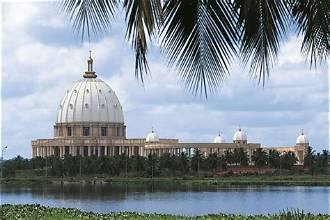
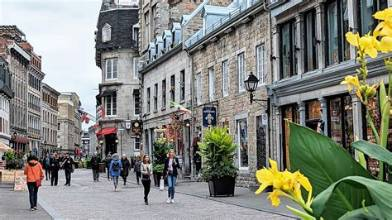
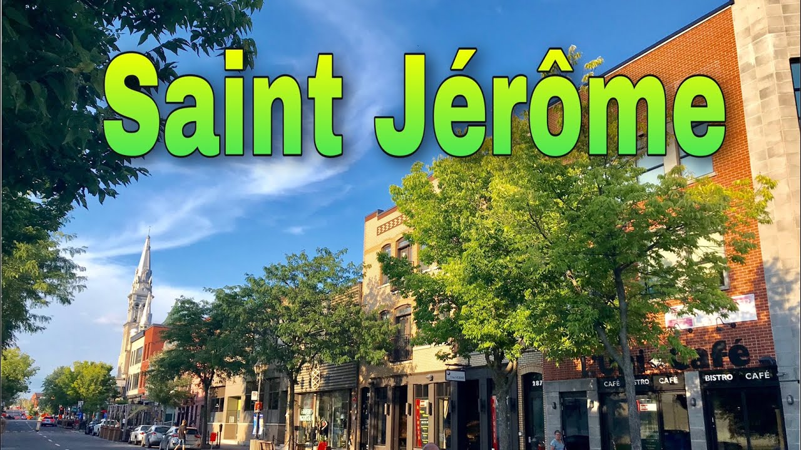

Piste 1 · 2008-2011
Côte d’Ivoire
La naissance à Yopougon et la musique pendant la guerre.
Écouter cette pisteUn objet, cinq pistes et dix-huit années de souvenirs.
Mes premiers écouteurs étaient filaires, bien avant les AirPods, mais le geste est resté le même : fermer le monde autour de moi et laisser la musique parler.
Ce petit objet blanc est devenu le fil conducteur de ma vie, et ce site la raconte à travers lui. Chaque page est une piste, avec sa propre musique : la Côte d’Ivoire, le Burkina Faso, le Ghana, le Canada, puis Saint-Jérôme. Dans les moments joyeux comme dans les moments difficiles, mes écouteurs ont été ma bulle.
Ouvre le boîtier, appuie sur lecture et suis-moi, de 2008 à aujourd’hui.
Avant de commencer, appuie sur lecture.

Piste 1 · 2008-2011
La naissance à Yopougon et la musique pendant la guerre.
Écouter cette pistePiste 2 · 2011-2013
Deux années de chaleur humaine et de bonne humeur.
Écouter cette piste

Piste 4 · 2013-2022
Le soccer, le CF Montréal junior et l’équipe du Québec.
Écouter cette piste
Piste 5 · 2022-2026
Les écouteurs comme refuge quand la maison devient tendue.
Écouter cette piste